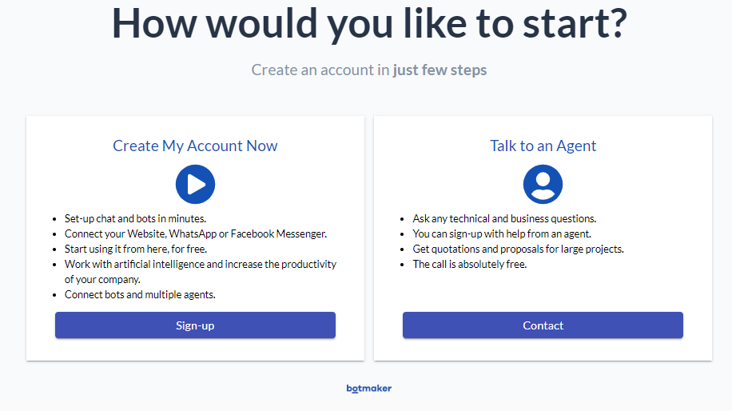
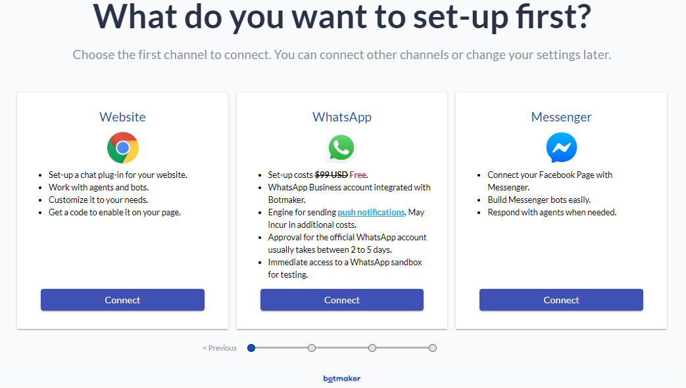
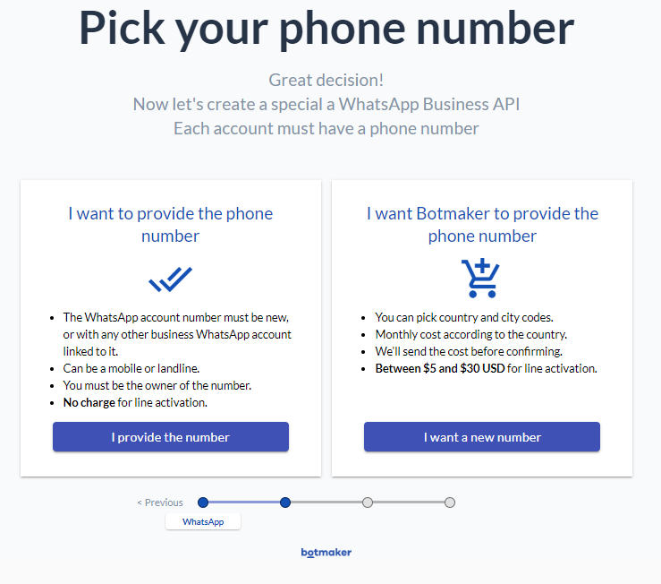
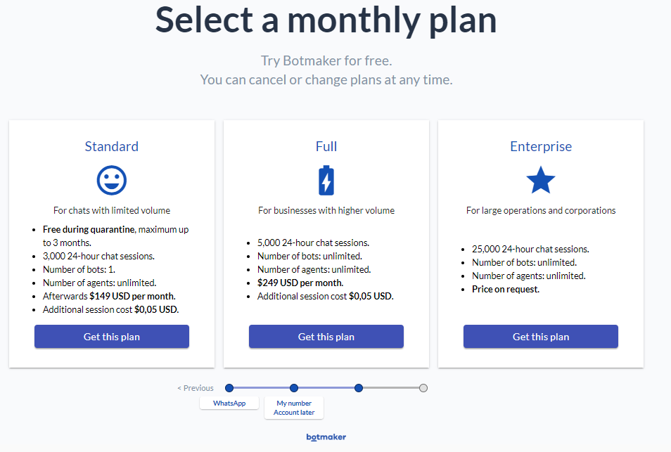
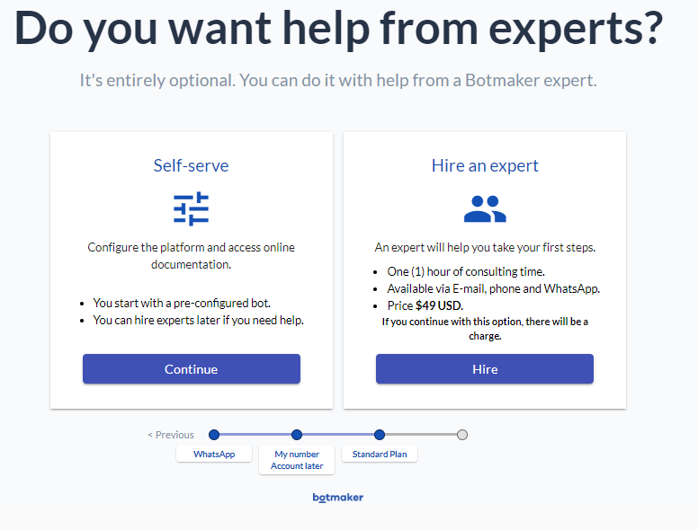
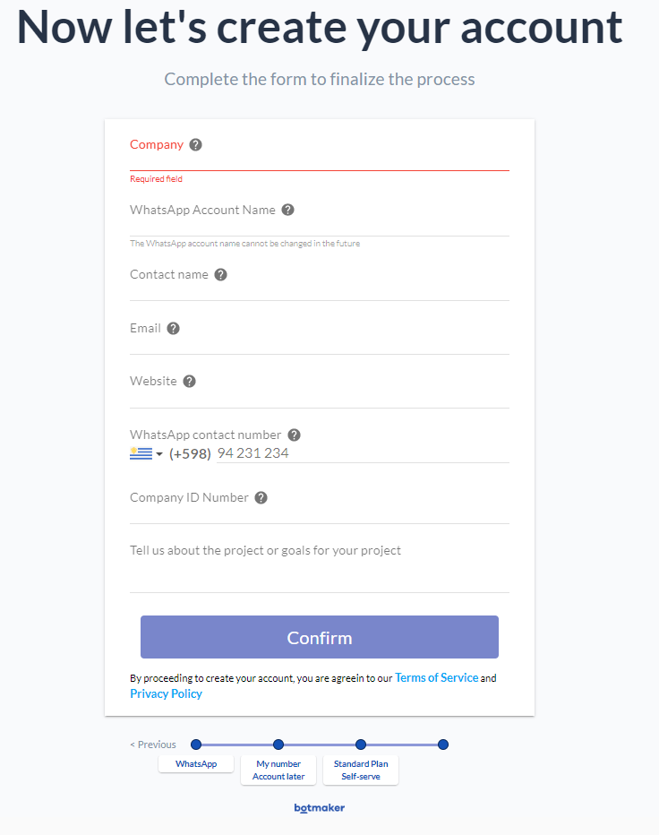
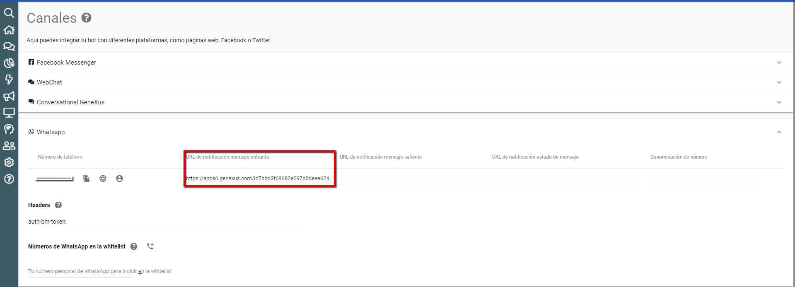
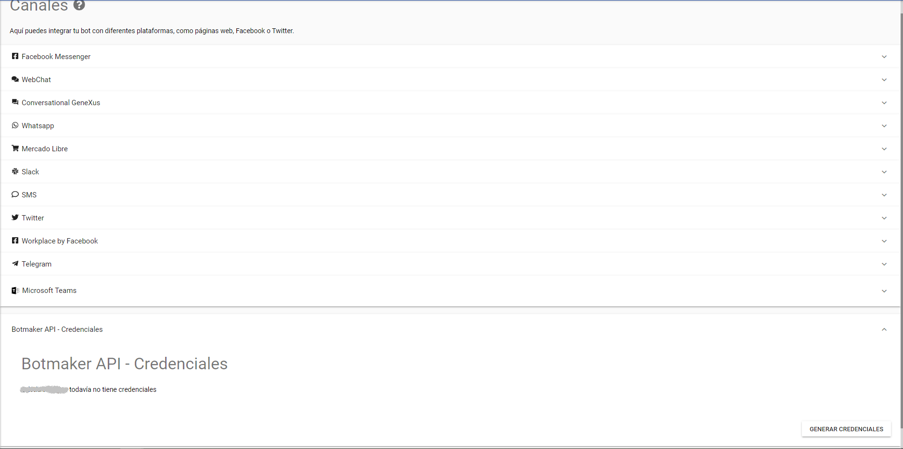

Here you will find instructions to set up Botmaker to use WhatsApp as a messaging platform for the Chatbot generator. Summary Creating the accountFirst, create the account.  You will be asked to choose a channel to connect your Chatbot (this can change later).  When selecting WhatsApp, you are asked to provide a phone number and the Facebook Business Manager ID. If you don't have it, Botmaker can help you get it.  Next, select the plan.  Select to configure it on your own or to receive help from experts.  Finally, complete the form to finish the process.  Configuring inbound message webhooksOn the platform page, configure the URL that Botmaker sends a webhook to for inbound messages. The Webhook is automatically generated by configuring in the KB the following properties: It's generated under the instance's module, and its name is WhatsappWebhook. After building it, configure the URL as follows: http://<server>/<baseURL>/<InstanceModule>.WhatsappWebhook.aspx (.NET) or http://<server>/<baseURL>/<InstanceModule>.WhatsappWebhook (Java) Note that the machine where the webhook is hosted has to be visible online:  Configuration settingsOn the platform page, create the credentials: Once it is created, the access token will be shown there. This access token is JWT. |
| Backlinks |
| Botmaker Token property |
| Multi-experience with GeneXus 17 |